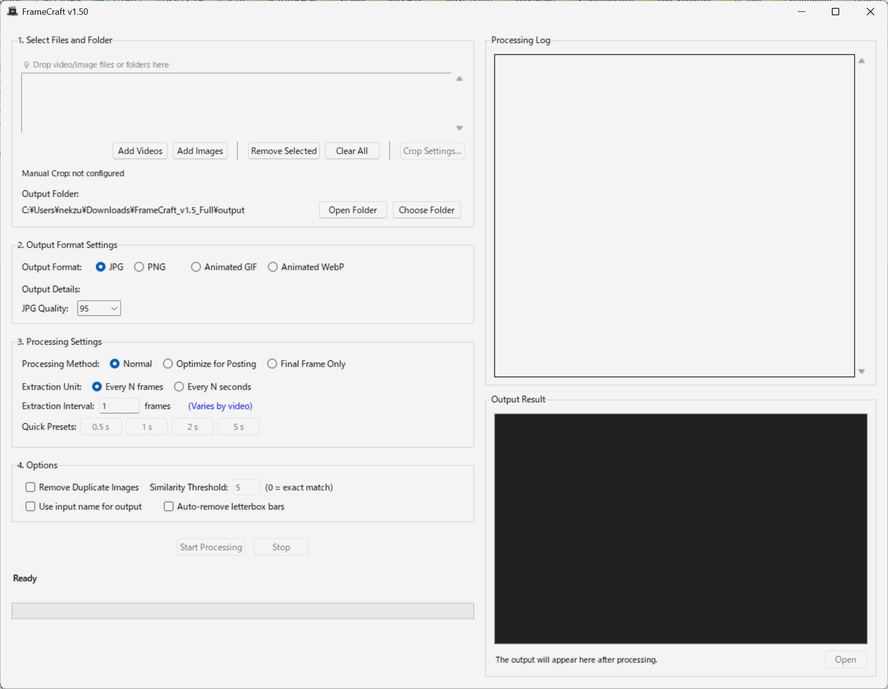

Extract precisely
By frame or by second.
- Frame / time intervalsExtract at exact intervals of frames or seconds
- Automatic FPS detectionOptimal extraction for each video
- Final frame onlyA starting point for chaining the next clip in video generation
Frame Craft
Video frame extraction & conversion
Extract images from video at precise frame or time intervals. Convert video into GIF or WebP animations, with output modes tailored to sites such as Pixiv ugoku-illust. A Windows tool.
Trial: up to 400 frames per video · Watermarked
v1.50 released Jun 21, 2026
Click to enlarge
01 Features
Pull out exactly the frames you want and turn them into animations or site-ready formats. Process multiple videos in one go.
By frame or by second.
Turn videos and image sequences into ready-to-use formats.
Handle many videos and frames with little effort.
02 How it works
Click “Add Videos” or drag & drop.
Set the image or animation format and the extraction interval.
Click “Start Processing” to extract and convert.
03 Requirements
04 Try & buy
Frame Craft / Windows
v1.50 · ZIP file
Commercial use by individuals is included.
View product page on PayhipFor corporate or enterprise use, contact us by email before purchasing.